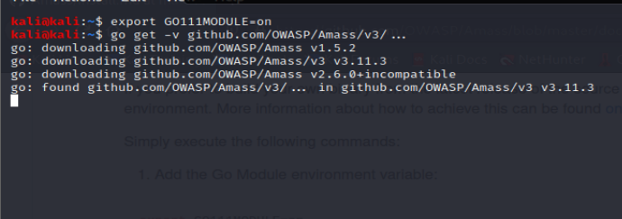

used for subdomain hunting too
its a bit different
so combine many tools
https://github.com/OWASP/Amass/blob/master/doc/install.md

so now we will build it in our script


commented the code coz ut takes time to run so wwe could actually take final.txt of both and combine them like coz amass gives more subdomains

this was that amss in action
we ll see now how to probe for these to see if its live or not
Httprobe